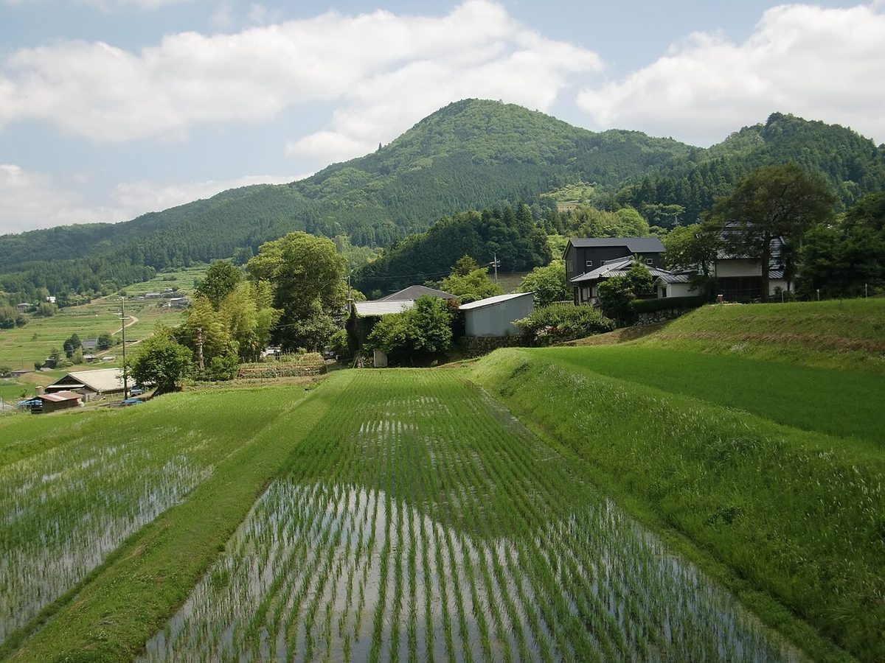
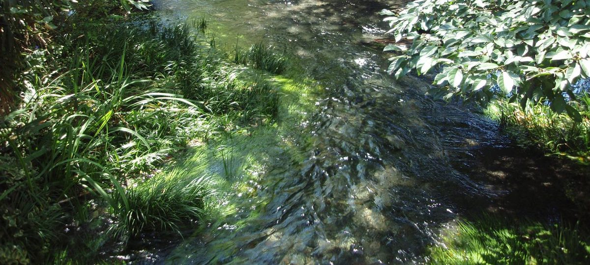
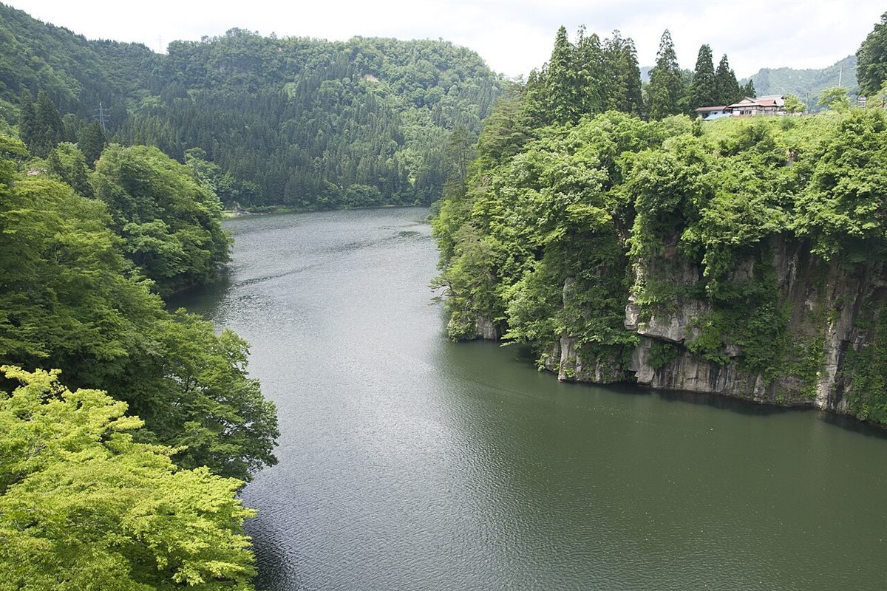
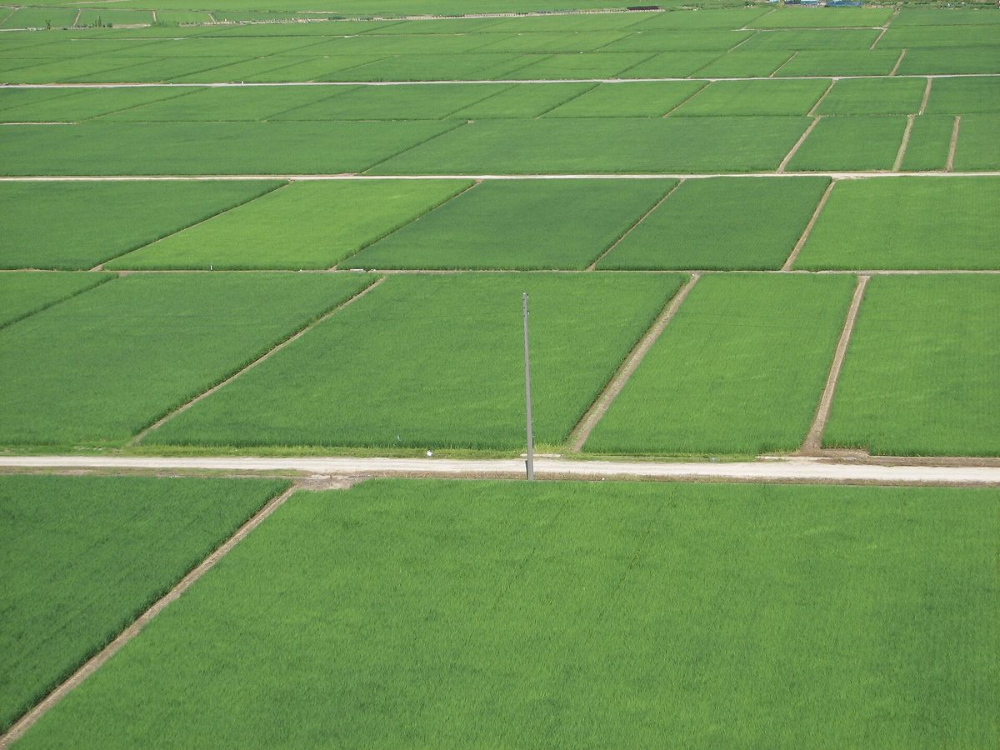

兵庫県加西市下宮木町
遠くを眺めて、
ひと息つく。
小鳥文庫(カフェ営業のみ)は、加西市下宮木町にあるカフェです。
このサイトのコンセプトは制作側の案です。
01
ご来店前のご案内
営業時間、メニュー、料金などの詳しい情報は準備中です。ご来店前に、お電話かInstagramでご確認ください。
このページの写真は、野原や田園、空や水辺などのフリー素材のイメージです。お店の実際の様子ではありません。



